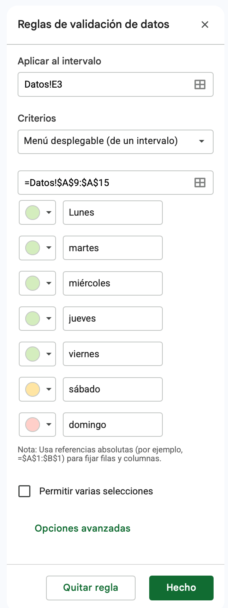

Por qué automatizar decisiones
De dónde venimos
En la Clase 08 armaste el archivo de La Usina: la hoja DATOS con las 336 inscripciones importadas, con importe_bruto e importe_neto calculados; la hoja PARAMETROS con el costo administrativo; un panel RESUMEN con los indicadores y un formato condicional que marca los errores de carga más visibles. Ese archivo es el punto de partida de hoy. Hacé una copia con Archivo → Hacer una copia y nombrala 2026-XX-XX_Informatica_Clase09_V01: así la entrega de la clase anterior queda intacta.
Para que las letras de las fórmulas de hoy coincidan con las de tu archivo, DATOS tiene que tener estas columnas:
| A | B | C | D | E | F | G | H | I | J | K | L | M |
|---|---|---|---|---|---|---|---|---|---|---|---|---|
id_inscripcion | orden | fecha_inscripcion | taller | sede | alumno | dni | arancel | beca_pct | estado | medio_pago | importe_bruto | importe_neto |
💡 Consejo: Si no tenés el archivo a mano
Podés rehacerlo en diez minutos: descargá Inscripciones_LaUsina_202606.csv, importalo con configuración regional Argentina y agregá orden, importe_bruto e importe_neto como en la clase anterior. Si ya tenés el archivo, verificá que la hoja PARAMETROS tenga el costo administrativo en B2.
⚠️ Atención
Todo lo de hoy asume que ya podés fijar una referencia con $ sin pensarlo, y que la sintaxis =FUNCIÓN(rango) te sale de memoria. Si todavía dudás, repasá eso antes de seguir: las funciones de esta clase se construyen literalmente arriba de esos conceptos.
De calcular a decidir
Hasta ahora tu planilla calculaba números. Una función lógica hace otra cosa: evalúa una condición y devuelve un resultado distinto según si esa condición se cumple o no. Traslada el "si pasa esto, entonces aquello" a una fórmula que la planilla evalúa fila por fila, sobre 336 filas, en el mismo tiempo que tarda en evaluar una sola.
💡 Consejo
Antes de escribir la fórmula, escribí la regla en español, en una oración con "si": "si la beca supera el máximo autorizado, es una excepción; si no, está dentro de la política". Traducir esa oración a la planilla es después un trámite casi mecánico.
El encargo de esta semana
El panel de la semana pasada funcionó, pero dejó una duda abierta. Ahora llega el pedido siguiente, y es de otro orden: no más números sueltos, sino criterios que la planilla aplique sola y una carga que el resto del equipo no pueda romper. Seguís trabajando sobre el mismo archivo de Google Sheets de la Clase 08.

Gracias por el panel. Vimos que el total del sistema da $3.525.000. Administración, por su parte, filtró las inscripciones "Confirmada" y le dio $2.277.700. Ninguno de los dos nos cierra y no sabemos cuál creer. Te pedimos tres cosas:
- Que cada inscripción quede clasificada sola: cuáles cuentan como facturación real, cuáles no cuentan (pendientes o anuladas), cuáles están repetidas y cuáles hay que revisar porque tienen algún error de carga.
- El total real, y cuánto aporta cada sede y cada taller, con cuántas inscripciones.
- A partir de julio la carga la van a hacer tres personas distintas. Necesitamos que el archivo no acepte cualquier cosa: que el estado, la sede y el taller salgan de una lista y no de lo que a cada uno se le ocurra escribir.
Gracias.
Qué te está pidiendo realmente
| Lo que dice el pedido | Lo que hay que hacer | Herramienta de esta clase |
|---|---|---|
| "Que cada inscripción quede clasificada sola" | Una regla de decisión con más de dos salidas, evaluada fila por fila | SI anidado, con Y y O |
| "Si cambia la política, que se reclasifique" | El valor de la política fuera de la fórmula, en su propia celda | Referencia absoluta ($) |
| "El total real y cuánto aporta cada sede y taller" | Sumar y contar solo el subconjunto que cumple un criterio | SUMAR.SI, CONTAR.SI |
| "Que el archivo no acepte cualquier cosa" | Restringir la carga desde el origen, no corregir después | Validación de datos por lista |
Las reglas de La Usina
La coordinación definió cómo se clasifica cada inscripción. Estas son las reglas que la planilla va a aplicar, en el orden en que se evalúan:
| Situación | Cuándo corresponde |
|---|---|
| Duplicada | El mismo id_inscripcion ya apareció más arriba en la lista (doble carga) |
| Válida | El estado es Confirmada (escrito como sea: Confirmada, CONFIRMADA, confirmada o Confirm.) y el arancel es mayor que cero |
| No cuenta | El estado es Pendiente o Anulada |
| Revisar | Cualquier otro caso: una inscripción confirmada con arancel en cero o negativo, un error de carga que alguien tiene que corregir |
💡 Consejo: Control de resultado
Con los datos de La Usina, la clasificación tiene que dar 248 válidas, 72 que no cuentan, 8 para revisar y 8 duplicadas: en total, 336. Si te da otra cosa, el error está en el orden de las condiciones, no en la sintaxis.
La función SI
Sintaxis
- Condición: una comparación que la planilla puede evaluar como verdadera o falsa. Usa los operadores
=,>,<,>=,<=,<>(distinto de). - Valor si verdadero: lo que aparece en la celda cuando la condición se cumple.
- Valor si falso: lo que aparece cuando no se cumple.
Un ejemplo completo:
⚠️ Atención: El texto va entre comillas
Si el resultado que querés mostrar es texto (no un número ni el resultado de otra fórmula), tiene que ir entre comillas dobles: "Aprobado", no Aprobado. Es el error más común al escribir un SI por primera vez: la planilla tira #¿NOMBRE? porque intenta interpretar Aprobado como el nombre de una función o de un rango.
Los operadores de comparación
| Operador | Significa | Ejemplo |
|---|---|---|
= | Igual a | B2=100 |
> | Mayor que | B2>6 |
< | Menor que | B2<6 |
>= | Mayor o igual que | B2>=6 |
<= | Menor o igual que | B2<=6 |
<> | Distinto de | B2<>0 |
💡 Consejo
Comparar texto con = no distingue mayúsculas de minúsculas: J2="Confirmada" es verdadero tanto para Confirmada como para CONFIRMADA o confirmada. Lo que sí distingue es cualquier carácter de más, como un punto o un espacio al final.
Un SI de dos ramas, aplicado a la política de becas
Antes de tocar tu archivo, cinco filas sin contexto para aislar la mecánica.
- En una hoja aparte, cargá cinco notas:
8,4,6,3,9. Al lado, conSI, mostrá "Aprobado" si la nota es mayor o igual a 6, y "Desaprobado" si no. Copiá hacia abajo: deberías obtener tres "Aprobado" y dos "Desaprobado". Si te sale#¿NOMBRE?, faltan las comillas. - Cargá el 6 en una celda aparte y reescribí la fórmula para que compare contra esa celda con referencia absoluta. Cambiala a 7 y confirmá que la columna entera se recalcula sin tocar ninguna fórmula.
- Abrí tu archivo de la Clase 08. En la hoja
PARAMETROS, debajo del costo administrativo, agregá enA3el textoBeca máxima autorizada (%)y enB3el valor50. - En la hoja
DATOS, agregá una columnabeca_alerta(laN) con unSIde dos ramas:"Excede política"sibeca_pctsupera ese máximo,"Dentro de política"si no. El máximo, con referencia absoluta a la otra hoja:=SI(I2>PARAMETROS!$B$3;"Excede política";"Dentro de política"). - Contá a ojo cuántas filas dicen "Excede política" y comparalo con las celdas que se pintaron de amarillo en la clase anterior: tienen que ser exactamente las mismas 10.
- Bajá el máximo a 20 en
PARAMETROSy confirmá que la columna se recalcula sola. Después devolvelo a 50.
 Actualizá tu LinkedIn
Actualizá tu LinkedIn
Google Sheets. Cómo la justificás: automatizo decisiones sobre datos con funciones lógicas, parametrizando los umbrales en celdas propias de modo que un cambio de criterio del negocio se aplique a todo el conjunto sin editar fórmulas.
Y, O y SI anidados
Una condición con dos salidas no alcanza: la regla de La Usina tiene tres resultados posibles para una inscripción que no es repetida. Para clasificar en tres o más categorías se anida un SI dentro de otro, en el lugar del "valor si falso". Y para que una misma rama exija varias condiciones a la vez, existen Y y O.
Combinar condiciones: Y y O
| Función | Devuelve verdadero cuando... | Ejemplo |
|---|---|---|
Y(cond1; cond2; ...) | Todas las condiciones se cumplen | =Y(H2>0; I2<=50): arancel positivo y beca dentro de la política |
O(cond1; cond2; ...) | Alguna de las condiciones se cumple (basta una) | =O(J2="Pendiente"; J2="Anulada"): pendiente o anulada |
Las dos se usan casi siempre adentro de un SI, en el lugar de la condición: =SI(Y(H2>0; I2<=50); "Ok"; "Revisar"). Y se pueden combinar entre sí: Y(O(a; b); c) significa "(a o b) y c".
SI anidados
Clasificar una nota en "Excelente" (9 o más), "Aprobado" (entre 6 y 8) o "Desaprobado" (menos de 6):
La lógica se lee así: "si la nota es 9 o más, Excelente. Si no, evaluá esta otra condición: si es 6 o más, Aprobado. Si tampoco se cumple, Desaprobado."
💡 Consejo: El orden decide el resultado
Escribí primero la condición que corta el grupo más específico o más excepcional, y dejá la última rama sin condición: es el "de lo contrario" que agarra todo lo que no entró antes. Si ponés primero la condición más amplia, se traga los casos que debían caer en las otras ramas, y la fórmula no da error, simplemente clasifica mal.
⚠️ Atención
Cada SI que abrís necesita su paréntesis de cierre. Con dos o tres anidados es fácil perder la cuenta: la planilla te marca el error, pero conviene ir cerrando cada uno apenas lo abrís, antes de seguir escribiendo.
Clasificar cada inscripción en tres grupos
Este es el punto 1 del pedido. La regla tiene tres salidas y una de ellas es la excepción, así que el orden importa.
- Antes de tocar tu archivo, probá la mecánica en chico: sobre las cinco notas de la Actividad 01, agregá una columna "Categoría" con tres salidas ("Excelente" 9 o más, "Aprobado" 6 a 8, "Desaprobado" menos de 6), agregá dos notas más (10 y 5) y confirmá que caen donde corresponde. Después invertí el orden poniendo primero la condición de "Aprobado": mirá qué pasa con el 9 y el 10, es el error de lógica que la fórmula no te va a avisar. Volvé a dejar el orden correcto.
- En la misma hoja de práctica, agregá una segunda columna de notas y una tercera columna con
=SI(Y(B2>=6; C2>=6); "Promociona"; "Recupera"). Cambiá una nota por debajo de 6 y mirá cómo cambia el resultado. Después reemplazáYporOy comprobá la diferencia. - En
DATOS, agregá una columnasituacion(laO) con unSIanidado que devuelva "Válida" si el estado es Confirmada (oConfirm.) y el arancel es mayor que cero, "No cuenta" si el estado es Pendiente o Anulada, y "Revisar" en cualquier otro caso:=SI(Y(O(J2="Confirmada"; J2="Confirm."); H2>0); "Válida"; SI(O(J2="Pendiente"; J2="Anulada"); "No cuenta"; "Revisar")) - Probá tres filas conocidas: una con estado
Confirm.y arancel positivo tiene que dar "Válida"; la inscripciónINS-20124(confirmada, con arancel de -$14.000) tiene que dar "Revisar"; cualquier fila con estado Pendiente tiene que dar "No cuenta". - Quitale a la primera condición el
H2>0y mirá qué pasa conINS-20124: pasa a "Válida" y su arancel negativo va a restar del total. Esa es la razón de ponerle el control a la rama más importante. Volvé a dejar la fórmula completa. - Aplicá formato condicional sobre la columna
situacion: verde para "Válida", rojo para "Revisar" y gris para "No cuenta". Ahora el archivo se lee de un vistazo.
SUMAR.SI y CONTAR.SI
El pedido quiere saber cuánto aporta cada sede y cada taller. Filtrar y sumar a mano da un número que queda anotado en un papel: sirve para hoy, pero hay que rehacerlo entero cuando llegue el archivo de julio. SUMA y CONTAR operan sobre todo un rango. SUMAR.SI y CONTAR.SI agregan una condición: solo suman o cuentan las celdas que la cumplen.
Sintaxis
SUMAR.SIrevisarango_criterioy, para cada celda que cumplecriterio, suma el valor de la celda correspondiente enrango_suma.CONTAR.SIcuenta cuántas celdas derangocumplencriterio: no necesita un rango de suma porque no suma nada, solo cuenta.
Sobre DATOS, con la sede en la columna E y el importe bruto en la L:
| Necesitás | Fórmula |
|---|---|
| Total de "Sede Sur" | =SUMAR.SI(E2:E337; "Sede Sur"; L2:L337) |
| Cantidad de inscripciones de "Sede Sur" | =CONTAR.SI(E2:E337; "Sede Sur") |
| Total de los aranceles mayores a $14.000 | =SUMAR.SI(H2:H337; ">14000") |
| Cantidad de aranceles mayores a $14.000 | =CONTAR.SI(H2:H337; ">14000") |
💡 Consejo
El criterio de texto va entre comillas ("Sede Sur"). El criterio con operador de comparación también va entre comillas, porque es una cadena que la planilla interpreta: ">14000", no >14000 suelto. Y mejor todavía: en lugar de escribir el nombre entre comillas, apuntá a la celda donde está escrito, así la fórmula se puede arrastrar. Igual que =, estos criterios no distinguen mayúsculas, pero sí los espacios de más.
Sin condición y con condición: la misma familia
| Función | Qué hace | Cuándo la usás |
|---|---|---|
SUMA | Suma todo el rango, sin condición | Querés el total general |
CONTAR | Cuenta celdas numéricas, sin condición | Querés saber cuántos registros hay |
SUMAR.SI | Suma solo lo que cumple una condición | Querés el total de un subconjunto |
CONTAR.SI | Cuenta solo lo que cumple una condición | Querés cuántos registros cumplen algo |
Un conteo con memoria: detectar repetidas
Una inscripción duplicada es una fila cuyo id_inscripcion ya apareció más arriba. CONTAR.SI sirve para detectarla si el rango crece a medida que bajás: =CONTAR.SI($A$2:A2; A2). El inicio del rango queda fijo ($A$2) y el final es relativo (A2). En la fila 2 cuenta solo A2; en la fila 3 cuenta A2:A3; en la fila 4, A2:A4. Si el resultado es mayor que 1, ese id ya había aparecido.
Los dos números que circulan y el real
Este es el punto 2 del pedido. Todo lo que sigue va en la hoja RESUMEN, debajo de los indicadores de la semana pasada. Los rangos de hoy llegan hasta la fila 1000, para que entren las inscripciones que se carguen más adelante.
- Antes de tocar tu archivo, probá la mecánica en chico: en una hoja aparte cargá siete filas con nombre y monto, García (45000, 61000, 19000), López (32000, 55000) y Pérez (28000, 47000). Con
SUMAR.SIcalculá el total de cada uno (125.000, 87.000 y 75.000) y conCONTAR.SIla cantidad de registros de cada uno (3, 2 y 2). La suma de los tres subtotales tiene que dar exactamente elSUMAde la columna completa (287.000), y la suma de los tres conteos, la cantidad de filas (7). - En
DATOS, sumá una cuarta rama asituacion: las repetidas. Editá la fórmula de laO2y anteponé un nuevoSI, de modo que la primera pregunta sea si el id ya apareció. Copiala hacia abajo hasta la fila 337:=SI(CONTAR.SI($A$2:A2; A2)>1; "Duplicada"; SI(Y(O(J2="Confirmada"; J2="Confirm."); H2>0); "Válida"; SI(O(J2="Pendiente"; J2="Anulada"); "No cuenta"; "Revisar"))) - Agregá dos columnas auxiliares más:
importe_valido(laP) con=SI(O2="Válida"; L2; 0)ycuenta(laQ) con=SI(O2="Válida"; 1; 0). Son el importe de las válidas y un 1 por cada válida; las dos valen 0 en todo lo demás. - En
RESUMEN, armá un bloque "Situación de las inscripciones" conCONTAR.SIsobreDATOS!O2:O1000para cada valor: Válida (248), No cuenta (72), Revisar (8) y Duplicada (8). La suma de los cuatro tiene que dar 336, igual queCONTARAsobreid_inscripcion. - Armá un bloque "Los tres números": el total del sistema,
=SUMA(DATOS!L2:L1000), que da $3.525.000; el total de administración,=SUMAR.SI(DATOS!J2:J1000; "Confirmada"; DATOS!L2:L1000), que da $2.277.700 y cuenta 215 inscripciones conCONTAR.SI; y el total real,=SUMA(DATOS!P2:P1000), que da $2.696.800 con 248 inscripciones.Mirá por qué ninguno de los dos primeros es el real: el del sistema suma repetidas, anuladas, pendientes y aranceles mal cargados; el de administración se pierde las 46 inscripciones escritas
Confirm.(el criterio exigeConfirmadacompleto) y además suma repetidas y aranceles negativos. Anotá estas dos explicaciones al lado de los números. - Agregá una línea "Disponible para las sedes (neto de costo administrativo)" con
=SUMAR.SI(DATOS!O2:O1000; "Válida"; DATOS!M2:M1000). Tiene que dar $2.572.800: el total real menos $500 por cada una de las 248 inscripciones válidas. - Creá una hoja
LISTAS. EnA1escribísedey debajo, una sola vez, las tres sedes (Sede Centro,Sede Norte,Sede Sur). EnB1escribítallery debajo los ocho talleres del catálogo:Cerámica,Guitarra,Fotografía analógica,Yoga,Huerta orgánica,Serigrafía,PercusiónyCostura creativa. Las áreas se escriben una sola vez, en celdas, nunca dentro de las fórmulas. - En
RESUMEN, armá los subtotales por sede a partir de la celdaA20: el nombre viene de la lista (=LISTAS!A2), el importe va en la columna B con=SUMAR.SI(DATOS!$E$2:$E$1000; A20; DATOS!$P$2:$P$1000)y la cantidad en la C con=SUMAR.SI(DATOS!$E$2:$E$1000; A20; DATOS!$Q$2:$Q$1000). Copiá hacia las otras dos sedes. Tenés que obtener Sede Centro $1.368.300 (118), Sede Norte $899.300 (81) y Sede Sur $397.000 (45). - Control obligatorio: sumá los tres subtotales y compará con el total real. No cierra: faltan $32.200 y 4 inscripciones. Agregá una línea "Sin sede" con la diferencia (total real menos la suma de las sedes). La explicación está en los datos: hay 4 inscripciones válidas con la sede vacía, y ningún criterio las atrapa.
- Repetí el bloque para los ocho talleres, con los nombres desde
LISTAS!B2:B9. Tenés que obtener Cerámica $760.200 (61), Guitarra $300.600 (34), Fotografía analógica $360.000 (25), Yoga $397.000 (45), Huerta orgánica $257.400 (33), Serigrafía $295.500 (23), Percusión $0 (0) y Costura creativa $282.100 (24). Otra vez la suma no cierra: agregá una línea "Taller no reconocido" con la diferencia, $44.000 y 3 inscripciones. Cada diferencia es una pista sobre un dato mal cargado. - Verificación cruzada: con
CONTAR.SIsobrebeca_alertacontá las "Excede política". Tienen que ser 10, las mismas filas de la regla amarilla.
Actualizá tu LinkedIn
Análisis de datos (Data Analysis). Cómo la justificás: produzco agregaciones por categoría con funciones de suma y conteo condicional, y verifico su integridad comprobando que los subtotales reconcilien contra el total general antes de informar cualquier cifra.
Validación de datos y listas desplegables
A partir de julio cargan tres personas distintas. Si una escribe Confirmada, otra Confirm. y la tercera confirmada , con un espacio al final, el SUMAR.SI que armaste recién se rompe en silencio: devuelve un número más bajo que el real y no avisa nada. Los subtotales dejan de cerrar contra el total, y alguien va a tardar una hora en descubrir por qué. La validación de datos previene ese problema desde el origen: restringe lo que se puede escribir en una celda.
Cómo aplicarla
- Seleccioná el rango donde querés restringir la carga.
- Andá a Datos > Validación de datos y hacé clic en Añadir regla.
- En "Criterios", elegí el tipo de restricción: Menú desplegable (escribís a mano las opciones válidas), Menú desplegable (de un intervalo) (las opciones válidas son los valores de un rango de celdas), criterios numéricos como Mayor que o Está entre (solo valores dentro de un rango) o Casilla.
- En las opciones avanzadas, elegí qué pasa si alguien ingresa un dato inválido: Rechazar los datos introducidos (no lo deja escribir) o Mostrar una advertencia (lo deja, pero avisa).
- Hacé clic en Hecho.

"Menú desplegable (de un intervalo)" es la opción que toma las opciones válidas de un rango de celdas (acá, los días de la semana): no de texto escrito a mano.
Por qué un intervalo y no una lista escrita a mano
Si escribís las opciones a mano dentro de la regla, para agregar una opción nueva tenés que volver a editar la regla. Si en cambio las opciones viven en un rango de celdas, agregar una opción es tan simple como escribir una fila más: la lista desplegable se actualiza sola. En un archivo que va a pasar por varias manos, esa diferencia es la que decide si el control sobrevive tres meses o no.
💡 Consejo
Guardá las listas de opciones en la hoja LISTAS. Mantiene la hoja principal limpia y hace que todas las validaciones del archivo apunten a un mismo lugar: si cambiás una opción ahí, cambia en todos lados a la vez.
⚠️ Atención
"Mostrar una advertencia" no impide que se cargue un dato incorrecto, solo lo señala. Si necesitás garantizar que nadie pueda romper la validación, que es exactamente lo que pide el correo, usá "Rechazar los datos introducidos". Y recordá que la regla controla lo que se escriba a partir de ahora: los datos que ya estaban en la hoja no se modifican.
Blindar la carga
Punto 3 del pedido: que el archivo aguante a tres personas cargando datos.
- Antes de tocar tu archivo, probá la mecánica en chico: en una hoja aparte armá una columna "Prioridad" y aplicale validación con "Menú desplegable" (
Alta,Media,Baja), con "Rechazar los datos introducidos". Cargá tres filas usando el desplegable e intentá escribir "urgente" a mano: tiene que rechazarlo. - En
LISTASagregá dos columnas más:estado(Confirmada,Pendiente,Anulada) en laCymedio_pago(Efectivo,Tarjeta,Transferencia) en laD. - En
DATOS, aplicá validación con "Menú desplegable (de un intervalo)" y "Rechazar los datos introducidos" a cuatro columnas, siempre desde la fila 2 hasta la 1000:sede(E2:E1000) apuntando aLISTAS!A2:A10,taller(D2:D1000) aLISTAS!B2:B20,estado(J2:J1000) aLISTAS!C2:C10ymedio_pago(K2:K1000) aLISTAS!D2:D10. Los rangos deLISTASson más largos que las listas actuales para que quepan opciones nuevas. - Probá que funciona: en la primera fila libre de
DATOS(la 338), intentá escribirConfirm.enestadoyCentroensede. Tiene que rechazar las dos entradas. Ese es, literalmente, el error que iba a romper tus subtotales. - Cargá la inscripción completa en la fila 338, usando solo los desplegables, con una fecha, un alumno, un dni, un arancel y una beca a tu criterio. Copiá hacia esa fila las fórmulas de
orden,importe_bruto,importe_neto,beca_alerta,situacion,importe_validoycuenta. Confirmá que los totales del panel de esta clase (que llegan a la fila 1000) se actualizan. Los de la Clase 08 (SUMAdeimporte_bruto, por ejemplo) no, porque su rango termina en la fila 337: editalos para que lleguen a la 1000. - Agregá un valor nuevo en
LISTAS(una sede más,Sede Oeste) y confirmá que aparece en el desplegable desedesin editar la regla de validación. Después borralo.
Actualizá tu LinkedIn
Control de calidad de datos (Data Quality Control). Cómo la justificás: prevengo errores de carga en archivos compartidos por varios usuarios mediante reglas de validación con listas alimentadas desde un rango único, de modo que las categorías se mantengan consistentes y las agregaciones no se rompan.
Cerrar el encargo y replicarlo en Excel
Dejar el archivo entregable
- Actualizá la hoja
LEEME: qué significa cada valor de la columnasituaciony en qué orden se evalúan, qué hacen las columnasbeca_alerta,importe_validoycuenta, cuál es el valor vigente de la beca máxima y en qué celda se cambia, y qué columnas están validadas por lista. - Verificá el archivo completo: ninguna celda con error, ningún valor de política ni nombre de sede o taller escrito dentro de una fórmula, y los bloques de situación y de sedes cerrando contra el total (con las líneas "Sin sede" y "Taller no reconocido" explicando lo que no cierra).
- Escribí, en tres o cuatro renglones, la respuesta al correo: cuál es el total real y cuántas inscripciones lo componen, por qué no coinciden los otros dos números, qué sede aporta más y qué pasa con las 8 inscripciones en "Revisar" y las 7 que no cuadran en sede o taller.
📤 Entrega de la clase
Subí a Moodle el enlace de tu planilla con acceso de lectura habilitado, nombrada 2026-XX-XX_Informatica_Clase09_V01. Antes de entregar, probá cargar a propósito un valor inválido en una columna validada: si entra, la regla quedó mal configurada.

La misma planilla, en Excel
- Descargá tu planilla con Archivo → Descargar → Microsoft Excel (.xlsx) y abrila en Excel.
- Verificá que las columnas
situacion,importe_validoycuentaconservan sus fórmulas y que el total real deRESUMENda lo mismo ($2.696.800). - Probá la validación en Excel: Datos → Validación de datos. Fijate si las cuatro columnas conservaron sus listas y si el modo es el de "Detener" (rechazar).
- Escribí en una celda libre la misma fórmula de
situacionpero con una condición cambiada, y comprobá que los argumentos van separados por;igual que en Sheets.
| Qué revisar | Detalle |
|---|---|
| Separador de argumentos | En Excel con configuración regional Argentina, los argumentos de SI, Y, O, SUMAR.SI y CONTAR.SI van separados por ;, igual que en Sheets |
| Validación de datos | Pestaña Datos > Validación de datos, con la opción "Lista" en el desplegable de Permitir. La lista puede apuntar directamente a un rango de otra hoja. El modo "Detener" equivale a "Rechazar los datos introducidos" |
| Nombres de función | SI, Y, O, SUMAR.SI y CONTAR.SI se llaman igual en Excel en español; si tu Excel está en inglés, son IF, AND, OR, SUMIF y COUNTIF |
| Mayúsculas | La comparación con = y los criterios de SUMAR.SI tampoco distinguen mayúsculas en Excel |
| Fijar una referencia | F4 (Mac: ⌘+T), igual que en Sheets |
⚠️ Atención
Si tu Excel está configurado en inglés, todas las funciones de hoy cambian de nombre: SI es IF, Y es AND, O es OR, SUMAR.SI es SUMIF, CONTAR.SI es COUNTIF. La lógica y los argumentos son exactamente los mismos, solo cambia el nombre.
Actualizá tu LinkedIn
Microsoft Excel. Cómo la justificás: replico en Excel la misma lógica de clasificación condicional, agregación por criterio y validación de datos que construyo en Google Sheets, adaptando nombres de función y separadores según el idioma y la configuración regional.
Resumen de la clase
Pasaste de calcular a decidir: escribiste una regla de negocio que la planilla aplica sola sobre cada registro, separaste el número real de los dos que circulaban, produjiste subtotales que reconcilian contra el total (y explican lo que no cierra), y blindaste la carga para que el archivo sobreviva a tres personas escribiendo en él.
Actividades
Actualizá tu LinkedIn
Google Sheets. Cómo la justificás: automatizo decisiones sobre datos con funciones lógicas, parametrizando los umbrales en celdas propias de modo que un cambio de criterio del negocio se aplique a todo el conjunto sin editar fórmulas.
Actualizá tu LinkedIn
Microsoft Excel. Cómo la justificás: replico en Excel la misma lógica de clasificación condicional, agregación por criterio y validación de datos que construyo en Google Sheets, adaptando nombres de función y separadores según el idioma y la configuración regional.
Referencia rápida
sheets.new en la barra del navegadorCtrl+1 (Mac: ⌘+1) abre el cuadro Formato de celdasCtrl+C / Ctrl+X / Ctrl+V (Mac: ⌘+C / ⌘+X / ⌘+V)Ctrl+Shift+V (Mac: ⌘+Shift+V)Ctrl+Alt+V (Mac: ⌘+Option+V)Ctrl+D / Ctrl+R (Mac: ⌘+D / ⌘+R)Ctrl+H (Mac: ⌘+Shift+H)=F4 (Mac: ⌘+T o Fn+F4)=NombreDeHoja!A1F2 (Mac: doble clic)=SUMA(rango): suma total=PROMEDIO(rango): media aritmética=CONTAR(rango) / =CONTARA(rango): celdas numéricas / no vacías=MAX(rango) / =MIN(rango): valor más alto / más bajo=POTENCIA(base;exp) / =RAIZ(número)Ctrl+Espacio / Shift+EspacioCtrl+flecha (Mac: ⌘+flecha)$A$2:A2 (la segunda referencia es relativa)=SI(condición; si_verdadero; si_falso)=SI(cond1; val1; SI(cond2; val2; val3))=Y(cond1; cond2)=O(cond1; cond2)"Válida"= no distingue mayúsculas de minúsculas, pero sí los espacios=SUMAR.SI(rango_criterio; criterio; rango_suma)=CONTAR.SI(rango; criterio)">50"=SUMAR.SI($E$2:$E$1000; A15; $P$2:$P$1000)SUMA: SUMPROMEDIO: AVERAGECONTAR: COUNTCONTARA: COUNTAPOTENCIA: POWERRAIZ: SQRTSI: IFY: ANDO: ORSUMAR.SI: SUMIFCONTAR.SI: COUNTIFValidación de datos: Data ValidationGlosario
Función que evalúa una condición y devuelve un resultado distinto según si esa condición se cumple o no.
Comparación (con =, >, <, >=, <= o <>) que la planilla evalúa como verdadera o falsa.
SIDevuelve un valor si una condición es verdadera y otro si es falsa: =SI(condición; valor_si_verdadero; valor_si_falso).
Un SI colocado dentro de otro, en el lugar del "valor si falso", para evaluar más de dos resultados posibles.
Y / OY devuelve verdadero si se cumplen todas sus condiciones; O, si se cumple alguna.
Criterio de la organización (un umbral, una excepción, una prioridad) que la planilla aplica de forma automática y uniforme sobre cada registro.
SUMAR.SISuma los valores de un rango que cumplen una condición definida sobre otro rango (o el mismo).
CONTAR.SICuenta las celdas de un rango que cumplen una condición definida.
Segundo argumento de SUMAR.SI y CONTAR.SI: el valor o la comparación que debe cumplirse. Va entre comillas, o se apunta a una celda.
Rango con el inicio fijo y el final relativo, como $A$2:A2, que se amplía fila a fila al copiar la fórmula hacia abajo.
Fila que repite un identificador (como id_inscripcion) que debería ser único, y que infla cualquier suma o conteo hasta que se detecta.
Comprobación de que la suma de los subtotales por categoría es igual al total general. Si no cierra, hay registros que ningún criterio está capturando.
Conjunto de reglas que restringen qué se puede escribir en una celda, para prevenir errores de carga.
Lista de opciones predefinidas que aparece al hacer clic en una celda con validación por lista.
Modo de validación que impide directamente cargar un valor fuera de las opciones permitidas.
Fuentes
- Google. *Función SI*. Ayuda de Editores de Documentos de Google.
support.google.com/docs/answer/3093364 - Google. *Funciones SUMAR.SI y CONTAR.SI*.
support.google.com/docs/answer/3093583 - Google. *Crear listas desplegables y validar datos*.
support.google.com/docs/answer/186103 - Microsoft. *Función SI*. Soporte de Microsoft.
support.microsoft.com/es-es/office - Microsoft. *Aplicar validación de datos a celdas*. Soporte de Microsoft.
support.microsoft.com/es-es/office